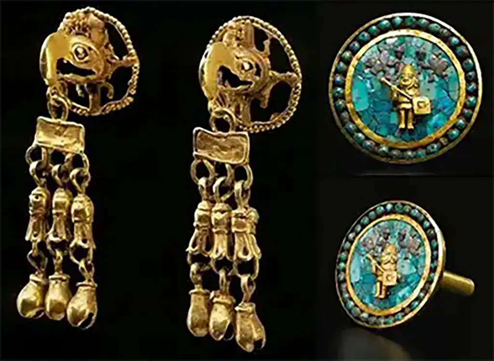

Jewelry History
The connection between ancient stelas and modern jewelry lies in their geometry. Just as the ancients carved limestone into precise pillars, modern jewelry relies on the geometric precision of the diamond.
The Mixtec Masters (900 – 1521 AD)
There is significant evidence that the Mixtec people of ancient Mexico were the most skilled goldsmiths in the Americas. They mastered the "lost-wax" casting technique to create gold jewelry that mirrored ceremonial monuments.
The Heart of the Craft: Guadalajara
- Native Gold and Silver
- Jadeite and Greenstone
- Turquoise Inlays
We host Curated Cultural Activations designed to immerse you in the history behind the art. Our team designs custom activities—from stone-selection masterclasses to Ancestral Design Workshops—that celebrate the intersection of Mexican heritage and modern Los Angeles style.
Technique Definitions
- Pre-Columbian Motif Workshops
- Stone-Selection Masterclasses
- Heritage Storytelling Circles
- Ancestral Smithing Demonstrations
- Artisanal Design Strategy
- The Modern Artifact Seminar
- L.A. Cultural Immersion Tours
Authentic community is built through shared heritage, refined skills, and a deep connection to the history behind the art. To be truly impactful, cultural appreciation must be an ongoing journey. We are here to facilitate that connection, bridging the gap between historical Mexican craftsmanship and the modern Los Angeles lifestyle.